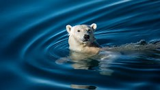
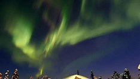
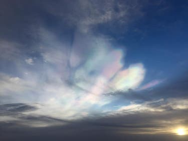
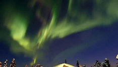
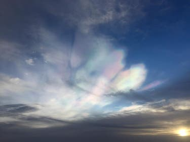

Polar light news




Here’s the best spot on Earth to see polar bears in the wild
The poetic collective noun for polar bears is an “aurora,” but ...
More

LOOKING UP: Santa's view of the polar night sky
There are many things we can be thankful for, one of them being is that the Wise Men had clear night skies on their way to Bethlehem.
More
Northern Lights could be visible in Britain as far south as Northern Ireland this weekend
Skywatchers have been alerted to look out for the Northern Lights, which could be visible tonight from Scotland and ...
More
Space samples suggest ‘new physics’ in cause of violent solar flares
Every day, huge explosions on the Sun erupt with massive amounts of energy, flinging particles out into space.
More

Rare nacreous cloud formations spark false Northern Lights reports across the UK
Unusually colourful cloud formations across the UK have sparked false reports of the aurora borealis.
More